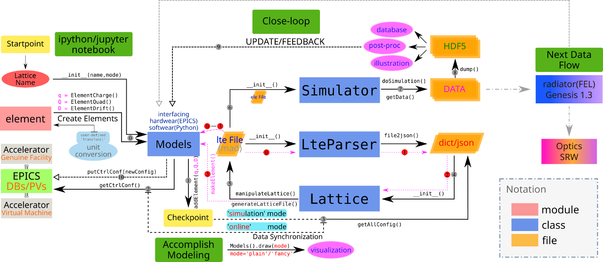

Introduction¶
Python package beamline is created for accelerator online-modeling
requirement, trying to supply both CLI and GUI working environment, upon
the already built infrastructure, extensions/tools could be developed
to solve specific problems.
Interfaces between EPICS control environment have been designed, manually modeling machine could be achieved following the examples that this manual provides, automatic modeling from lattice file is also supported.
Tracing back to the very beginning of this package, ideas about to build a full-featured OOP high-level development environment by Python has been incubated, as well as the highly flexibility to meet different requirements.
Below is the design picture inside this package, to accomplish various goals:
- Parsing
Elegant(electron accelerator tracking code) lattice file (.lte) to be python dict or json string for further operations. - Modeling accelerator magnetic elements, such as dipole, quadrupole, drift, etc. to be python objects, from EPICS control environment to OOP level.
- Automatic modeling from
.ltelattice file definition with postfixed!epicsanotation to define EPICS control configurations. - Support unit conversion between EPICS PV raw value and the physical real value of elements.
- Modeling lattice beamline from modeled elements, constructing Lattice instance,
dumping
.ltefile for code tracking. - Feeding defined elements with new configuration, interfacing with EPICS environment, to form the close-loop online system.
- Visualizing the lattice layout by predefined elements’ style.
- Friendly native-look GUI application to facilitate these (part of) functionalities.